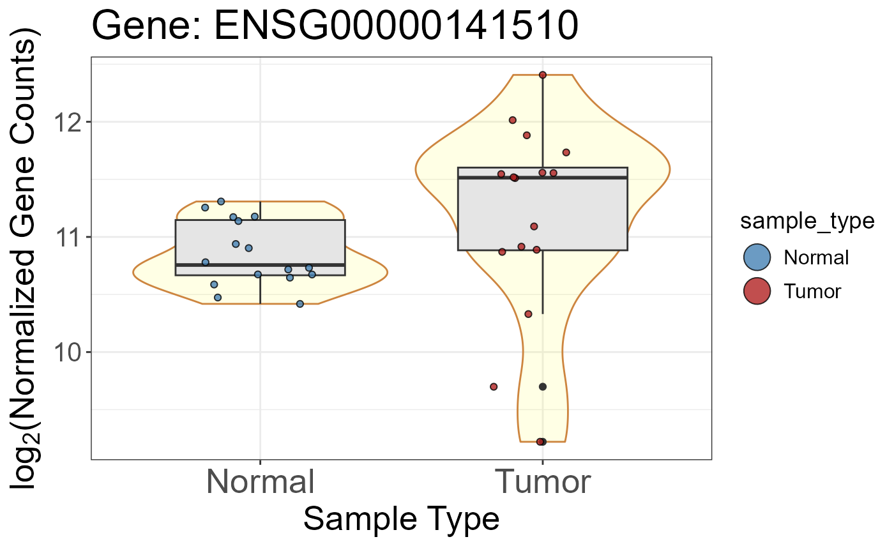

Normalized counts matrix for TCGA-LUAD
norm_counts.RdDESeq2 size-factor normalized counts derived from the TCGA-LUAD RNA-seq dataset (16 tumor samples, 16 normal samples). Counts are divided by DESeq2 size factors to correct for differences in library size across samples, but remain in counts scale (not log-transformed).
Format
A numeric matrix with 21,330 rows (genes) and 32 columns (samples):
- rows
Ensembl gene IDs (e.g.,
"ENSG00000141510").- columns
Sample IDs matching the
patient_idcolumn of sampledata.- values
Non-negative numeric. Size-factor normalized counts. Range: [0, 1,889,573].
Source
TCGA-LUAD STAR counts downloaded from the GDC Data Portal
(https://gdc-hub.s3.us-east-1.amazonaws.com/download/TCGA-LUAD.star_counts.tsv.gz).
Normalized with DESeq2::counts() (normalized = TRUE); generated by
data-raw/deseq2_results.R.
Details
Suitable as input for nice_VSB(), detect_filter(), and
add_annotations(). For dimensionality reduction methods (nice_PCA(),
nice_UMAP(), nice_tSNE()) use vst_counts instead, which removes the
mean-variance dependence of RNA-seq data.
Examples
data(norm_counts)
data(sampledata)
# Dimensions
dim(norm_counts)
#> [1] 21330 32
# Value range
range(norm_counts)
#> [1] 0 1889573
# Expression of a specific gene across samples
norm_counts["ENSG00000141510", ]
#> TCGA.38.4627.11A TCGA.44.2661.11A TCGA.44.2662.11A TCGA.44.2665.11A
#> 1914.5555 2534.9102 1603.0635 2314.8319
#> TCGA.44.3396.11A TCGA.49.4490.11A TCGA.49.6761.11A TCGA.50.5051.01A
#> 1700.5453 1537.9780 2443.5041 3775.4310
#> TCGA.50.5072.01A TCGA.50.5939.11A TCGA.50.6595.01A TCGA.50.6595.11A
#> 2180.7565 1634.4604 4137.6613 1633.3010
#> TCGA.53.7626.01A TCGA.53.7813.01A TCGA.55.1596.01A TCGA.55.6970.01A
#> 2918.7277 2931.9430 1895.6312 3008.4676
#> TCGA.55.6970.11A TCGA.55.6978.11A TCGA.55.6979.01A TCGA.55.6979.11A
#> 1421.9952 1368.6635 3406.6963 2307.3641
#> TCGA.55.6982.01A TCGA.55.6982.11A TCGA.55.7283.01A TCGA.55.7574.01A
#> 1931.3499 1683.8674 5432.3717 1871.6205
#> TCGA.55.7576.01A TCGA.55.7914.01A TCGA.73.4675.01A TCGA.86.7713.01A
#> 831.1300 1287.4486 3015.4637 596.5427
#> TCGA.91.6829.11A TCGA.91.6835.11A TCGA.91.7771.01A TCGA.38.4626.11A
#> 1962.8063 2254.1426 2989.4743 1758.7167
# Violin-Scatter-Box plot for one gene
nice_VSB(
object = norm_counts,
annotations = sampledata,
variables = c(fill = "sample_type"),
genename = "ENSG00000141510",
categories = c("normal", "tumor"),
labels = c("Normal", "Tumor"),
colors = c("steelblue", "firebrick")
)
#> Warning: Ignoring empty aesthetic: `size`.

if (FALSE) { # \dontrun{
# detect_filter: (required: "ensembl" column in results)
deseq2_res <- deseq2_results
colnames(deseq2_res)[colnames(deseq2_res) == "gene_id"] <- "ensembl"
rownames(deseq2_res) <- deseq2_res$ensembl
# Get sample IDs per group from sampledata
samples_normal <- sampledata$patient_id[sampledata$sample_type == "normal"]
samples_tumor <- sampledata$patient_id[sampledata$sample_type == "tumor"]
detected <- detect_filter(
norm.counts = as.data.frame(norm_counts),
df.BvsA = deseq2_res,
samples.baseline = samples_normal,
samples.condition1 = samples_tumor,
cutoffs = c(50, 50, 0)
)
# Number of detectable genes
length(detected$DetectGenes)
# Subset results to detectable genes
head(detected$Comparison1)
# add_annotations: add gene symbols
# Required: reference df with geneID + annotation columns
# Example using biomaRt to fetch gene symbols
library(biomaRt)
mart <- useEnsembl("ensembl", dataset = "hsapiens_gene_ensembl")
ref <- getBM(
attributes = c("ensembl_gene_id", "hgnc_symbol", "gene_biotype"),
filters = "ensembl_gene_id",
values = rownames(norm_counts),
mart = mart
)
colnames(ref)[1] <- "geneID"
norm_counts_annot <- add_annotations(
object = norm_counts,
reference = ref,
variables = c("hgnc_symbol", "gene_biotype")
)
head(norm_counts_annot[, c("geneID", "hgnc_symbol", "gene_biotype")])
} # }